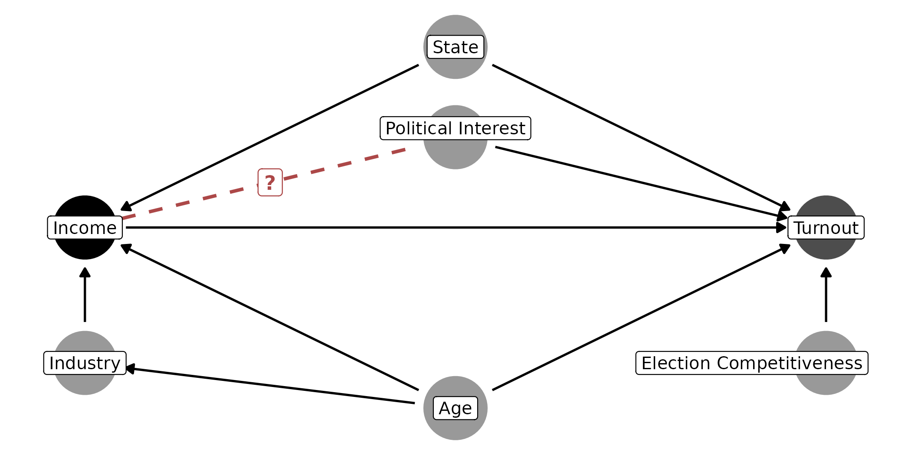

Every DAG makes two kinds of assumptions that are difficult to settle
empirically: 1) the direction of each edge, and 2) the absence of every
edge that isn’t drawn. A missing edge implies that one variable has no
direct effect on another (Haber et al. 2022).
DAGassist checks whether your adjustment sets, and
therefore your estimate, depend on those assumptions. This article
continues the voter-turnout example from the homepage and Causal roles and adjustment sets.
Uncertain arrow directions
The turnout DAG assumes that income raises political interest
(income -> polint), which makes political interest a
mediator. However, it is also plausible that politically engaged people
may seek out better-paid work. The dashed line marks the arrow whose
direction is in doubt.

pdag_robustness() takes the DAG and the edges whose
direction you’re unsure of, written A -- B. It considers
every acyclic orientation of those edges and then reports whether the
adjustment sets, or any variable’s role, change across orientations.
f <- turnout ~ income + state + age + polint + industry + elect_comp
pdag_robustness(turnout_dag, formula = f, uncertain_edges = "income -- polint")
#>
#> PDAG robustness summary:
#> - uncertain edges specified: 1
#> - worlds evaluated (acyclic orientations): 2
#> - minimal adjustment set changed: yes
#> - canonical adjustment set changed: yes
#> - covariate role changed: mediator -> ambiguous (confounder / mediator) for polint (good/bad control flip)
#> - re-estimation recommended: yesBoth adjustment sets change, and polint flips between
mediator (a bad control) and confounder (a good one). The formula is
optional. When you supply it, DAGassist checks whether the
variables whose roles change are actually in your model, which
determines whether it recommends re-estimating.
You can list several uncertain edges at once:
pdag_robustness(turnout_dag, formula = f,
uncertain_edges = c("income -- polint", "state -- income"))
#>
#> PDAG robustness summary:
#> - uncertain edges specified: 2
#> - worlds evaluated (acyclic orientations): 4
#> - minimal adjustment set changed: yes
#> - canonical adjustment set changed: yes
#> - covariate role changed: mediator -> ambiguous (confounder / mediator) for polint (good/bad control flip)
#> - covariate role changed: confounder -> ambiguous (confounder / mediator) for state (good/bad control flip)
#> - re-estimation recommended: yesEach uncertain edge doubles the number of possible orientations, so
max_uncertain caps the list at 10 edges (1,024 worlds) by
default. Cyclical orientations are skipped because they are not valid
DAGs.
Re-estimation
DAGassist recommends re-estimating when, as above, edge
uncertainty affects adjustment sets. To see the estimate under the
alternative orientation, reverse the arrow and rerun
DAGassist():
alt_dag <- dagitty::dagitty(sub("income -> polint", "polint -> income",
as.character(turnout_dag), fixed = TRUE))
DAGassist(alt_dag,
lm(turnout ~ income + state + age + polint + industry + elect_comp,
data = turnout_data),
show = "models", type = "text", verbose = FALSE)| Term | Original | Minimal 1 | Canonical |
|---|---|---|---|
| income | 0.281*** | 0.276*** | 0.281*** |
| (0.016) | (0.017) | (0.016) | |
| state | 0.331*** | 0.324*** | 0.331*** |
| (0.017) | (0.018) | (0.017) | |
| age | 0.275*** | 0.278*** | 0.275*** |
| (0.017) | (0.019) | (0.017) | |
| polint | 0.420*** | 0.426*** | 0.420*** |
| (0.014) | (0.016) | (0.014) | |
| industry | -0.017 | -0.017 | |
| (0.015) | (0.015) | ||
| elect_comp | 0.500*** | 0.500*** | |
| (0.014) | (0.014) | ||
| Num.Obs. | 5000 | 5000 | 5000 |
| R2 | 0.596 | 0.497 | 0.596 |
- p-value legend: + < 0.1, * < 0.05, ** < 0.01, *** < 0.001.
- Controls (minimal): {age, polint, state}.
- Controls (canonical): {age, elect_comp, industry, polint, state}.
If political interest causes income, polint is a
confounder, the minimal set becomes {age, polint, state},
which yields an estimate of about 0.28. Under the original DAG,
polint is a mediator and the model returns an estimate of
0.49. The data are identical in both cases; the answer depends entirely
on the direction of the edge between income and
polint.
Missing arrows
add_edges_robustness() asks the complementary question:
what if the DAG omits out an edge that exists in the underlying data
generating process? It adds each candidate edge to the DAG one at a time
and reports how the adjustment sets and roles change. A directed edge
(A -> B) is an omitted direct effect; a bidirected edge
(A <-> B) is an unmeasured common cause of
A and B.
add_edges_robustness(turnout_dag, formula = f,
add_edges = c("industry -> turnout",
"polint <-> turnout",
"income <-> turnout"))
#>
#> Edge-addition (exclusion) robustness:
#> - edges tested: 3
#> - industry -> turnout: minimal changed: yes; canonical changed: no
#> new minimal set(s): {age, industry, state}
#> role changes: industry: nct->confounder
#> - polint <-> turnout: minimal changed: no; canonical changed: no
#> - income <-> turnout: effect NOT identifiable if this pathway exists (no adjustment set blocks it)
#> - re-estimation recommended: yes-
industry -> turnout. If industry affects turnout directly, it becomes a confounder, and the minimal set must include it. The canonical set doesn’t change, because it already containsindustry. Estimates from the canonical model are therefore robust to this particular omission. -
polint <-> turnout. An unmeasured common cause of political interest and turnout leaves the total-effect adjustment sets unchanged. -
income <-> turnout. An unmeasured common cause of the exposure and the outcome cannot be removed by any set of controls. If that confounding is plausible, adjustment alone can’t recover the effect.
Running robustness checks inside DAGassist()
Edge orientation and missing edge diagnostics are available as
arguments to DAGassist(), which appends them to the
standard report. uncertain_edges and add_edges
work as above, and pdag accepts a dagitty PDAG
whose undirected (--) edges are treated as uncertain.
DAGassist(turnout_dag,
lm(turnout ~ income + state + age + polint + industry + elect_comp,
data = turnout_data),
show = "roles",
uncertain_edges = "income -- polint",
add_edges = "industry -> turnout",
verbose = FALSE)
#> DAGassist Report:
#>
#> Roles:
#> variable role Exp. Out. conf med col dOut dMed dCol dConfOn dConfOff NCT NCO
#> income exposure x
#> turnout outcome x
#> age confounder x
#> state confounder x
#> polint mediator x
#> elect_comp nco x
#> industry nct x x
#>
#> (!) Bad controls in your formula: {polint}
#>
#> Legend hidden because verbose = FALSE. Re-run with verbose = TRUE to see role definitions.
#>
#> PDAG robustness summary:
#> - uncertain edges specified: 1
#> - worlds evaluated (acyclic orientations): 2
#> - minimal adjustment set changed: yes
#> - canonical adjustment set changed: yes
#> - covariate role changed: mediator -> ambiguous (confounder / mediator) for polint (good/bad control flip)
#> - re-estimation recommended: yes
#>
#> Edge-addition (exclusion) robustness:
#> - edges tested: 1
#> - industry -> turnout: minimal changed: yes; canonical changed: no
#> new minimal set(s): {age, industry, state}
#> role changes: industry: nct->confounder
#> - re-estimation recommended: yesThe standalone functions only require a DAG and a formula, so you can
run them before collecting any data. DAGassist() also needs
the data, because it fits the comparison models.
Choosing which edges to test
Testing every possible edge is neither feasible nor informative. Good candidates are:
- Arrows whose timing is ambiguous, where reverse causation is plausible (income and political interest; income and place of residence).
- Unmeasured common causes of the exposure and the outcome.